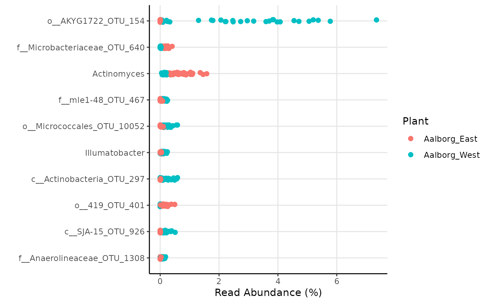
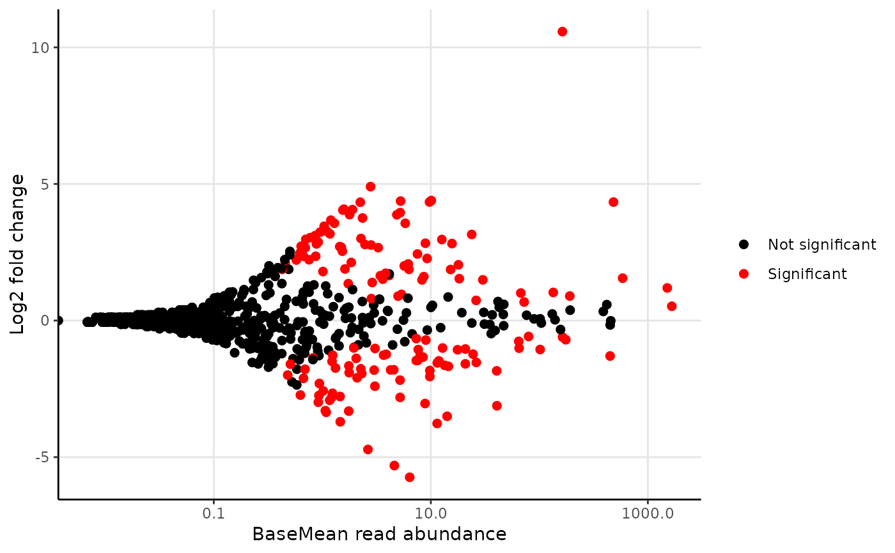

amp_diffabund.RdTests if there is a significant difference in abundances between samples or groups hereof based on selected conditions. Returns a list containing test results as well as two different plots; an MA-plot and an abundance plot with taxa with the most significant p-value (below the threshold).
amp_diffabund(data, group)
| data | (required) Data list as loaded with |
|---|---|
| group | (required) A categorical variable in the metadata that defines the sample groups to test. |
| test | The name of the test to use, either |
| fitType | The type of fitting of dispersions to the mean intensity, either |
| num_threads | The number of threads to use for parallelization by the |
| signif_thrh | Significance threshold. (default: |
| fold | Log2fold filter for displaying significant results. (default: |
| verbose | (Logical) Whether to print status messages during the test calculations. (Default: |
| signif_plot_type | Either |
| plot_nshow | The amount of the most significant results to display in the most-significant plot. (default: |
| plot_point_size | The size of the plotted points. (default: |
| tax_aggregate | The taxonomic level to aggregate the OTUs. (default: |
| tax_add | Additional taxonomic level(s) to display, e.g. |
| tax_class | Converts a specific phylum to class level instead, e.g. |
| tax_empty | How to show OTUs without taxonomic information. One of the following:
|
| adjust_zero | Keep 0 abundances in ggplot2 median calculations by adding a small constant to these. |
| ... | Additional arguments passed on to |
A list with multiple elements:
"DESeq2_results": The raw output result from DESeq.
"DESeq2_results_signif": The raw output result from DESeq, but subset to only taxa with p-value below the threshold set by signif_thrh.
"signif_plotdata": The data used to generate the ggplots, but subset to only taxa with p-value below the threshold set by signif_thrh.
"Clean_results": A simpler version of DESeq2_results_signif only with adjusted p-values, log2FoldChange, and average abundance of each taxa per group.
"plot_MA": MA-plot
"plot_MA_plotly": Interactive plotly plot of MA-plot with custom hover information.
"plot_signif": Abundance plot with taxa with the n most significant p-value (below the threshold), where n is set by plot_nshow.
"plot_signif_plotly": Interactive plotly plot of plot_signif with custom hover information.
Kasper Skytte Andersen kasperskytteandersen@gmail.com
Mads Albertsen MadsAlbertsen85@gmail.com
library(ampvis2extras) # Load example data data("AalborgWWTPs") # Subset to a few taxa, save the results in an object d <- amp_subset_taxa(AalborgWWTPs, tax_vector = c("p__Chloroflexi", "p__Actinobacteria"))#> #> #>results <- amp_diffabund(d, group = "Plant", tax_aggregate = "Genus")#> #>#>#>#>#>#>#>#> #> #>#>#>#> #>#> Warning: Transformation introduced infinite values in continuous x-axis# Show plots results$plot_signifresults$plot_MA#> Warning: Transformation introduced infinite values in continuous x-axis# Or show raw results results$Clean_results#> # A tibble: 810 × 5 #> # Groups: Taxonomy, padj [810] #> Taxonomy padj Log2FC Aalborg_East Aalborg_West #> <chr> <dbl> <dbl> <dbl> <dbl> #> 1 o__AKYG1722_OTU_154 8.6e-83 11 0.001 2.73 #> 2 f__Microbacteriaceae_OTU_640 2.1e-34 -3 0.178 0.015 #> 3 Actinomyces 2.6e-33 -1.8 0.734 0.146 #> 4 f__mle1-48_OTU_467 1.4e-32 2.8 0.027 0.136 #> 5 o__Micrococcales_OTU_10052 3.6e-31 2.8 0.049 0.246 #> 6 Illumatobacter 1.1e-27 2.4 0.029 0.114 #> 7 c__Actinobacteria_OTU_297 2 e-27 4.4 0.011 0.186 #> 8 o__419_OTU_401 6.7e-27 -5.7 0.133 0.001 #> 9 c__SJA-15_OTU_926 4.4e-26 4.3 0.013 0.16 #> 10 f__Anaerolineaceae_OTU_1308 4 e-23 3.9 0.008 0.08 #> # … with 800 more rows